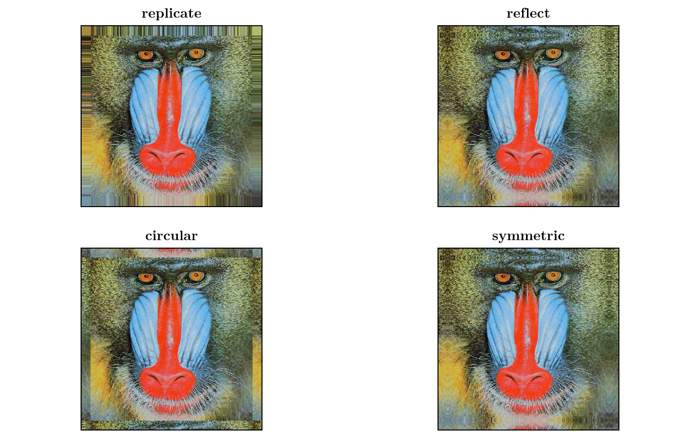

Border Arrays
A BorderArray is a light wrapper on a parent::AbstractArray that expands the domain by a border with the prescribed extent given in the constructor by edges. The border is added by a rule that prescribes a value to a given index that is not contained in the domain of the parent.
TransferFunctions.BorderArray — TypeBorderArray{T,N,AA,AB} <: AbstractArray{T,N}A border array with a border of type AB with the parent array of type AA.
It is a light wrapper around the parent array that defines Base.getindex to return values with its supplied border scheme.
julia> TransferFunctions.BorderArray(reshape(1:36, (6,6)), TransferFunctions.Fill, 2)
10×10 border_array(reshape(::UnitRange{Int64}, 6, 6), fill(0)) with eltype Int64 with indices -1:8×-1:8:
0 0 0 0 0 0 0 0 0 0
0 0 0 0 0 0 0 0 0 0
0 0 1 7 13 19 25 31 0 0
0 0 2 8 14 20 26 32 0 0
0 0 3 9 15 21 27 33 0 0
0 0 4 10 16 22 28 34 0 0
0 0 5 11 17 23 29 35 0 0
0 0 6 12 18 24 30 36 0 0
0 0 0 0 0 0 0 0 0 0
0 0 0 0 0 0 0 0 0 0TransferFunctions.border_array — Functionborder_array(A, border, padding)Construct a BorderArray of A with the border border and padding padding.
julia> border_array(reshape(1:9, (3,3)), :circular, 2)
7×7 border_array(reshape(::UnitRange{Int64}, 3, 3), :Circular) with eltype Int64 with indices -1:5×-1:5:
5 8 2 5 8 2 5
6 9 3 6 9 3 6
4 7 1 4 7 1 4
5 8 2 5 8 2 5
6 9 3 6 9 3 6
4 7 1 4 7 1 4
5 8 2 5 8 2 5A BorderArray is useful for expanding the domain of an array during filtering (i.e. convolution or correlation) to avoid boundary effects while preserving the original size of the array in the output.
While this is a common practice for making calculations in the Fourier domain and then returning to the natural domain of the array, when you want to make some parameter estimation or want to determine a value directly from the Fourier images of arrays, using TaperedArrays or a combination of a BorderArray and a TaperedArray can be more appropriate.
Border Types
The procedure of determining the value of the border of the BorderArray is determined by the border field which has a subtype of AbstractBorder.
TransferFunctions.AbstractBorder — TypeAbstractBorder{T}Super type for borders of arrays with the element type T
Implementation
A new border type needs to implement
Base.getindex(b::AbstractBorder{T}, A::AbstractArray{T,N}, I::Vararg{Int,N}) where {T,N}where A is the parent array of the BorderArray.
For different applications, different border types are optimal.
TransferFunctions.Replicate — TypeReplicate{T} <: IndexMapBorder{T}A border that replicates the closest edge value of the parent array
julia> TransferFunctions.BorderArray(reshape(1:16, (4,4)), TransferFunctions.Replicate, 2)
8×8 border_array(reshape(::UnitRange{Int64}, 4, 4), :Replicate) with eltype Int64 with indices -1:6×-1:6:
1 1 1 5 9 13 13 13
1 1 1 5 9 13 13 13
1 1 1 5 9 13 13 13
2 2 2 6 10 14 14 14
3 3 3 7 11 15 15 15
4 4 4 8 12 16 16 16
4 4 4 8 12 16 16 16
4 4 4 8 12 16 16 16TransferFunctions.Symmetric — TypeSymmetric{T} <: IndexMapBorder{T}A border that symmetrically continues the values or the parent array around the edges, i.e. mirrors around the last valid parent index.
julia> TransferFunctions.BorderArray(reshape(1:16, (4,4)), TransferFunctions.Symmetric, 2)
8×8 border_array(reshape(::UnitRange{Int64}, 4, 4), :Symmetric) with eltype Int64 with indices -1:6×-1:6:
11 7 3 7 11 15 11 7
10 6 2 6 10 14 10 6
9 5 1 5 9 13 9 5
10 6 2 6 10 14 10 6
11 7 3 7 11 15 11 7
12 8 4 8 12 16 12 8
11 7 3 7 11 15 11 7
10 6 2 6 10 14 10 6TransferFunctions.Reflect — TypeReflect{T} <: IndexMapBorder{T}A border that reflects the values of the border around the edges of the parent array
julia> TransferFunctions.BorderArray(reshape(1:16, (4,4)), TransferFunctions.Reflect, 2)
8×8 border_array(reshape(::UnitRange{Int64}, 4, 4), :Reflect) with eltype Int64 with indices -1:6×-1:6:
6 2 2 6 10 14 14 10
5 1 1 5 9 13 13 9
5 1 1 5 9 13 13 9
6 2 2 6 10 14 14 10
7 3 3 7 11 15 15 11
8 4 4 8 12 16 16 12
8 4 4 8 12 16 16 12
7 3 3 7 11 15 15 11TransferFunctions.Circular — TypeCircular{T} <: IndexMapBorder{T}A border that wraps the values around the edges of the parent array
julia> TransferFunctions.BorderArray(reshape(1:16, (4,4)), TransferFunctions.Circular, 2)
8×8 border_array(reshape(::UnitRange{Int64}, 4, 4), :Circular) with eltype Int64 with indices -1:6×-1:6:
11 15 3 7 11 15 3 7
12 16 4 8 12 16 4 8
9 13 1 5 9 13 1 5
10 14 2 6 10 14 2 6
11 15 3 7 11 15 3 7
12 16 4 8 12 16 4 8
9 13 1 5 9 13 1 5
10 14 2 6 10 14 2 6TransferFunctions.Fill — TypeFill{T} <: AbstractBorder{T}A border that fills the values with value::T
If you want to simply remove the boundary effects of filtering and do not care about the values of the edges of the output (or the filtering kernel is small enough compared to the array that the edges are not important) you can fill the border with zeros or some other value
# For a filtering kernel with axes (-30:30, -30:30)
A_zero_padded = border_array(A, :fill, 30) # single padding for all the dimensions and left/right edges
A_mean_padded = border_array(A, TransferFunctions.Fill(mean(A)), (30, 30)) # (left, right) padding
A_unequally_padded = border_array(A, TransferFunctions.Fill(mean(A)), ((25, 20), (40, 35))) # In the order of axes i.e. ((top, bottom), (left, right))If the border values are important to you, it is better to use some border scheme that relates to the values of the parent array in the locality of the border or the opposing edge of the array. The types of borders that are implemented are :replicate, :reflect, :circular and :symmetric.

If the border type does not support the extent of the padding that is given in the constructor, the TransferFunctions.InvalidBorderExtent is thrown.
TransferFunctions.InvalidBorderExtent — TypeInvalidBorderExtent <: ExceptionIs thrown when trying to construct a BorderArray with padding larger than the maximum padding that would produce valid values.